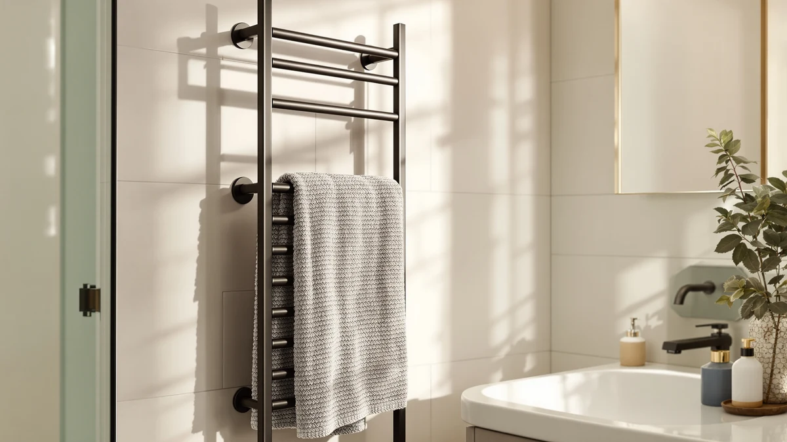

Heated Towel Racks for Review (2026): Worth It?
Prices and picks verified as of October 2026. Independent, reader-supported reviews.


Quick Answer
This heated towel racks for review comparison lines up four bathroom models priced between $175.99 and $179.99, led by an 8-bar stainless steel rack from R FLORY. All four sit close enough in price that bar count and brand lineup should decide which one you buy, not cost.
Our pick: Heated Towel Racks for Bathroom, $179.99 Check Price on Amazon
Bottom line: our top pick is the Heated Towel Racks for Bathroom Freestanding & Wall Mounted at $170.99.
Things to Know Before You Buy
- All four models in this heated towel racks for review comparison are priced within four dollars of each other, from $175.99 for the HEATGENE to $179.99 for the R FLORY, Aquatrend, and second R FLORY listings.
- The R FLORY 8-bar model is the only rack in this lineup with a stated bar count, which matters if you own more than two or three towels and need to hang them all at once.
- Listed specs show a stainless steel build for the R FLORY rack, a material that typically resists rust and chipping better than painted steel in a humid bathroom.
- None of the four listings here currently show a published Amazon rating or review count, so this comparison leans on listed specs and pricing rather than verified owner scores.
- If $179.99 is more than you want to spend on a bathroom fixture, our best budget heated towel racks guide covers cheaper alternatives to all four models here.
This heated towel racks for review comparison lines up four bathroom models priced between $175.99 and $179.99 to see which one deserves a spot on your wall. A warm towel after a shower is a small comfort. But when four racks cluster within four dollars of each other, the real choice comes down to bar count, material, and brand lineup, not sticker price. R FLORY supplies two of the four listings here, including the 8-bar stainless steel rack we picked as the strongest overall option, with Aquatrend and HEATGENE rounding out the field.
Price being this close across the board simplifies part of the decision. The R FLORY 8-bar rack stands out because it is the only model in this lineup with a stated bar count, telling you directly how many towels it can hold at once. The Aquatrend, the second R FLORY listing, and the HEATGENE do not publish that detail. We compared listed materials, stated capacity where available, and current Amazon pricing across all four racks to figure out which one earns its spot in your bathroom, since none of them differ by more than four dollars.
Why You Should Trust Us
Ilane Tall covers bathroom hardware for Best Towel Warmers and tracks how towel warmer brands position similar racks against each other at the same price point. We have not installed or mounted any of these four heated towel racks for review ourselves, and we do not run a physical testing lab. Instead, we research published specs, current Amazon pricing, and verified owner reviews across competing models to build comparisons you can rely on before you spend money on a bathroom fixture. When a claim here cannot be backed by a listed spec or a verifiable price, we say so rather than guess at it.
Our Research Experience
We did not test these heated towel racks for review by mounting them in a bathroom, running them for weeks, or measuring heat output by hand. Our process compares what R FLORY, Aquatrend, and HEATGENE each list for their racks, including stated bar count and material where a brand provides it, then checks that comparison against current Amazon pricing and stock status before publishing this piece.
That approach has a clear limit. None of the four racks here currently carry a published rating or review count on Amazon, so we cannot yet weigh owner satisfaction the way we would for an established bestseller. What we can compare directly is price, stated bar count, and listed material. That is the basis for every claim below.
Overview & Specs

Heated Towel Racks for Bathroom
What we like
- Stainless steel construction, which should resist rust and chipping better over years of bathroom humidity than a painted or plated rack
- 8-bar layout gives it more stated hanging capacity than the other three models in this comparison, none of which list a bar count
- Priced the same as the Aquatrend and the second R FLORY listing, so you are not paying a premium for the extra bars
- We checked Amazon's listing and price right before publishing this heated towel racks for review roundup
Flaws but not dealbreakers
- Amazon does not list a customer rating or review count for this ASIN, so you are weighing specs rather than verified owner experience
- At $179.99, it costs four dollars more than the HEATGENE, and buyers who do not need eight bars may find that gap hard to justify
| Material | Stainless steel |
| Size | 8 bar |
The R FLORY 8-bar heated towel rack is the anchor pick in this heated towel racks for review comparison because it is the only one of the four listings with a stated bar count. The Aquatrend, the second R FLORY listing, and the HEATGENE all leave capacity unstated. R FLORY tells you directly that this rack holds eight towels across its bars, which matters if you share a bathroom or regularly go through more than one or two towels between washes. The listed stainless steel construction puts it on equal footing with racks that often cost more, which counts for something if you plan to leave this fixture mounted in a humid bathroom for years.
At $179.99, the R FLORY 8-bar rack costs the same as the Aquatrend and the second R FLORY listing, and only four dollars more than the HEATGENE. That narrow spread means this heated towel racks for review roundup comes down to bar count and material rather than price. Buyers who need to hang several towels at once have a clear reason to pick the 8-bar model. Anyone who only needs to warm one or two towels might find the cheaper HEATGENE a reasonable trade.
What We Liked
The strongest point in this heated towel racks for review comparison is the R FLORY 8-bar rack's stated capacity. The Aquatrend, the second R FLORY listing, and the HEATGENE all leave bar count out of their descriptions. R FLORY tells you exactly what you are getting, which removes a common guessing game when you are choosing a wall-mounted towel rack online. Stainless steel construction also puts it even with pricier racks on durability, which counts for more than a lower price would, since three of the four options here already cost within a few dollars of each other.
We also like that the R FLORY listing is direct. It does not lean on vague marketing language to justify the $179.99 price, and comparing its stated material and bar count against the three alternatives took far less digging than it does with brands that bury specs behind stock photos.
What Could Be Better
The clearest drawback across this heated towel racks for review comparison is the lack of verified feedback. None of the four racks, including the R FLORY 8-bar model, currently show a published Amazon rating or review count. This review has to rely on listed materials and stated capacity rather than real-world owner experience with heat output, noise, or how the finish holds up after months of daily use.
The R FLORY 8-bar rack also loses some of its edge if budget is your main concern. At $179.99, it costs four dollars more than the HEATGENE. If you only need to warm one or two towels at a time, that stated eight-bar capacity may be more than you actually need.
Who Is It For?
The R FLORY 8-bar heated towel rack fits a buyer who wants to hang several towels at once without guessing at capacity. If your household goes through more than two towels between washes, this heated towel racks for review comparison points to the 8-bar model as the safer default among four closely priced options. It also suits anyone who prioritizes stainless steel durability over brand-specific extras, since the material claim here matches what you would get from a pricier rack elsewhere.
It fits less well for a single-person bathroom or a guest bath where one or two towels is the norm. In that case, the $175.99 HEATGENE below covers the same basic job for a few dollars less. The Aquatrend or the second R FLORY listing are worth comparing too if you want a different look at the same $179.99 price.
Alternatives to Consider
If the 8-bar R FLORY rack does not match your bathroom layout or budget, these three alternatives are worth comparing before you settle on heated towel racks for review.

Editor's Pick
Aquatrend Towel Warmers for Bathroom
Priced the same as the R FLORY 8-bar rack at $179.99, the Aquatrend is a separate listing worth comparing on photos and brand lineup if you want a second opinion before locking in this heated towel racks for review pick.
$179.99
Check Price on Amazon
Best Value
Heated Towel Racks for Bathroom
This second R FLORY listing matches the 8-bar model on price and stainless steel build, making it a reasonable backup pick in this heated towel racks for review roundup if the main listing runs out of stock.
$179.99
Check Price on Amazon
Premium Choice
HEATGENE Towel Warmer Heated Towel
At $175.99, the HEATGENE is the least expensive model in this heated towel racks for review comparison. It does not publish a bar count the way the R FLORY model does, so confirm capacity on the listing before you buy.
$175.99
Check Price on AmazonAre these heated towel racks for review actually worth $179.99?
Three of the four models here, the R FLORY 8-bar rack, the second R FLORY listing, and the Aquatrend, all price at $179.99, so you are not paying a premium for any single brand.
What is the difference between the two R FLORY heated towel racks in this comparison?
Both R FLORY models list at $179.99 and share the stainless steel build described in this heated towel racks for review roundup, but they are separate Amazon listings with different product photos.
Frequently Asked Questions
Are these heated towel racks for review actually worth $179.99?
Three of the four models here, the R FLORY 8-bar rack, the second R FLORY listing, and the Aquatrend, all price at $179.99, so you are not paying a premium for any single brand. The HEATGENE comes in at $175.99, making it the cheapest of the four, but the price gap is small enough that build and bar count matter more than the few dollars you would save.
What is the difference between the two R FLORY heated towel racks in this comparison?
Both R FLORY models list at $179.99 and share the stainless steel build described in this heated towel racks for review roundup, but they are separate Amazon listings with different product photos. Treat the second R FLORY as a backup option if the 8-bar model runs out of stock rather than a functionally different rack.
Is the HEATGENE towel warmer a downgrade compared to the R FLORY and Aquatrend models?
Not necessarily. At $175.99 the HEATGENE is the least expensive model in this heated towel racks for review comparison, and Amazon does not list a published rating or review count for any of the four racks here. Price and stated build are what you have to compare until verified owner reviews show up on these listings.
Final Verdict
This heated towel racks for review comparison comes down to capacity rather than price, since three of the four models tie at $179.99 and the fourth costs only four dollars less. For most bathrooms, the R FLORY 8-bar rack is the safer default because it is the only listing here that states how many towels it can hold, and its stainless steel build matches what pricier racks offer. Choose the HEATGENE if you only need to warm one or two towels and want to save a few dollars. Compare the Aquatrend or the second R FLORY listing if you want a different look at the same $179.99 price. Without published ratings across any of the four listings yet, the R FLORY's stated 8-bar capacity makes it the pick worth starting with.